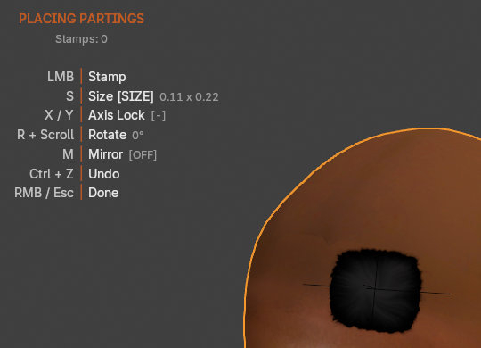

Place Parting And Placement Keys¶
Applies to: Parting Placer V2.0.0 · Blender 4.4 · 5.2
Place Parting puts you into placing mode on the head. This page covers the button and every key you can use until you finish.

Place Parting¶
Select Place Parting in the panel, then move the mouse over the head. A preview parting follows the cursor while it is over the head.
The first parting on a head starts at a size worked out from the head's own size. After that, each session starts at the size of your last parting. Rotation goes back to 0°, and mirror starts off.
A new parting faces straight out from the surface wherever you place it, whatever its proportions. Move it later with G and it keeps facing the surface as you drag. Any twist you added with R stays.
Partings placed with an earlier version are left as they were.
If the head already has partings and Auto Preview is ticked, Preview switches on as you start. See Auto Preview.
If Place Parting refuses to start, the status bar says why:
| Message | What to do |
|---|---|
| Run this from a 3D Viewport. | Start it from the 3D viewport's sidebar. |
| No target mesh. Pick one in the Partings panel or select a mesh object. | Set Target, or select the head. See Target. |
| Head has no material to stamp into. | Give the head a material first. |
| Material slot is empty. | Put a material in the head's empty material slot. |
Add > Mesh Menu Entries¶
The 3D viewport's Add > Mesh menu has three entries at the bottom: Place Partings, Repair Partings and Reset Partings.
Place Partings does the same as Place Parting. The other two match the Repair Partings and Reset Partings icons in the panel header.
Key Guide¶
While you place, a key guide sits in the viewport. Its title is PLACING PARTINGS, with Stamps under it counting the partings placed this session.
Each row shows a key, what it does, and its current state:
| Row | Shows |
|---|---|
| LMB Stamp | |
| S Size | Two numbers, one per side of the parting. [SIZE] appears while size mode is on. |
| X / Y Axis Lock | [X], [Y] or [R] for what the scroll wheel is locked to, or [-] for nothing |
| R + Scroll Rotate | The angle in degrees |
| M Mirror | [ON] or [OFF] |
| Ctrl + Z Undo | |
| RMB / Esc Done |
The guide goes away when you finish. It only shows in the viewport you started placing from.
Mouse Move¶
The preview parting follows the cursor while it is over the head. Over empty space, nothing appears.
S¶
Press S to switch to size mode. The key guide shows [SIZE], and each scroll notch makes the parting a little bigger or smaller on both sides.
Press S again to leave size mode. Scrolling then zooms the viewport as usual.
The size you end on carries to every parting you place afterwards, including in later sessions.
X / Y¶
Press X or Y to lock resizing to one side of the parting. X changes the first size number and Y the second. Size mode stays on.
Press the same key again to release the lock.
R + Scroll¶
Press R, then scroll to rotate the parting by 5° per notch. Pressing R turns size mode off.
Press R again to release it. Scrolling then zooms the viewport again.
Ctrl + Scroll¶
Hold Ctrl and scroll to resize both sides without pressing S first. This shortcut is not listed in the key guide.
M¶
Press M to turn mirroring on. The key guide shows [ON] and a mirrored preview appears on the other side. Press M again to turn it off.
Every session starts with mirroring off. For what happens to a mirror after you place it, see Mirror Partings.
Left Click¶
Click to place the parting where the preview sits. Placing mode stays on, so you can keep clicking to add more.
Ctrl+Z¶
While you place, Ctrl+Z removes the last parting. Press it again to remove the one before.
After you finish, one Ctrl+Z takes back the whole session.
Right Click / Esc¶
Right-click or press Esc to finish. The status bar reports how many partings you placed in that session. For example: Finished — 2 parting decal(s) on 'Material.001_Partings'.
If Preview came on as you started, the message adds that Preview Mode is still on. See Preview Mode Is Still On After I Finish Placing.
If You're Stuck
- Nothing follows the mouse? See Place Parting Does Nothing.
- The key guide is missing? See The Key Guide Has Disappeared From The Viewport.
- Placed a parting and can't see it? See I Cannot See Any Partings.
Recommended next: Preview